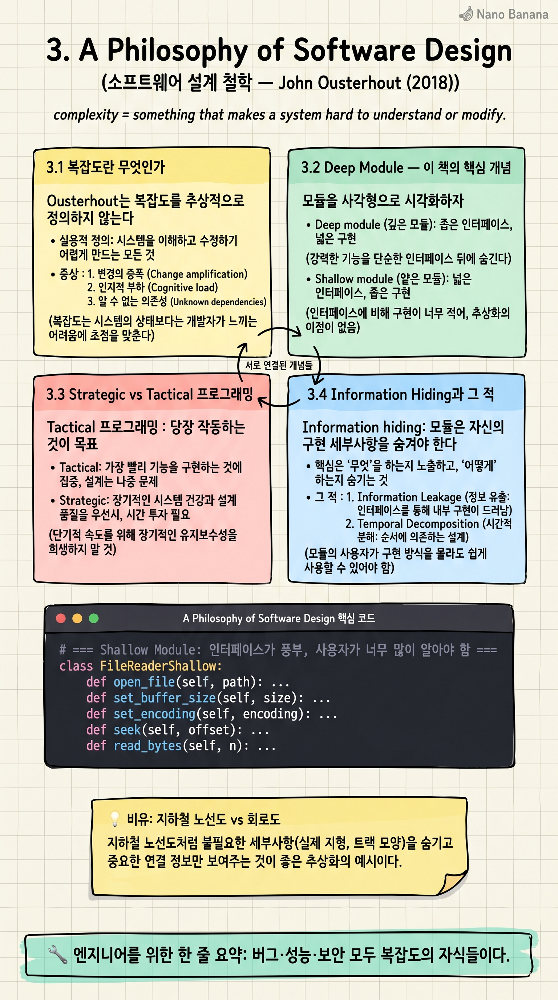

A Philosophy of Software Design

🎯 학습 목표
- 복잡도의 세 가지 증상(변경 증폭·인지 부하·미지의 미지)을 식별한다
- Deep Module vs Shallow Module의 차이를 설명할 수 있다
- Strategic 프로그래밍이 Tactical보다 장기적으로 우월한 이유를 이해한다
- Information hiding을 진짜로 적용할 줄 안다
- AI 시대에 모듈 설계가 왜 더 중요해지는지 본다
스탠퍼드 대학의 John Ousterhout 교수가 자신의 CS190 강의 노트를 책으로 엮은 것. Tcl과 Raft 합의 알고리즘으로 유명한 그가 수십 년의 시스템 설계 경험을 응축한 결과물이다. 한 줄 요약: 소프트웨어의 단 하나의 진짜 적은 '복잡도(complexity)'다.
이 책의 가장 강력한 개념은 'deep module' — 인터페이스는 단순하지만 내부 기능은 강력한 모듈. AI 시대엔 더더욱 중요하다. 왜냐하면 LLM이 우리 코드를 읽고 수정하는 비중이 커질수록, 인터페이스가 단순하고 책임이 분명한 모듈이 에이전트의 실수를 줄이기 때문이다. Shallow module은 LLM에게도 인간에게도 적이다.
핵심 내용
3.1 복잡도란 무엇인가
Ousterhout는 복잡도를 추상적으로 정의하지 않는다. 그는 복잡도를 세 가지 구체적 '증상'으로 정의한다.
변경 증폭(Change amplification): 작은 변경에 여러 곳을 동시에 손대야 한다. 예: 색상 하나 바꾸는데 20개 파일 수정.
인지 부하(Cognitive load): 무언가를 바꾸기 전에 알아야 하는 것의 양. API 하나 호출하는데 문서 5장 읽어야 한다면 인지 부하가 높다.
미지의 미지(Unknown unknowns): 무엇을 알아야 하는지조차 모른다. 가장 위험한 형태의 복잡도다. 이건 좋은 코드에선 사라져야 한다.
이 정의의 묘미는 측정 가능하다는 점이다. PR 하나가 5개 파일을 건드리면 변경 증폭이 있다. 신규 입사자가 한 모듈을 이해하는 데 일주일이 걸리면 인지 부하가 높다.
3.2 Deep Module — 이 책의 핵심 개념
모듈을 사각형으로 시각화하자. 가로 = 인터페이스의 복잡도. 세로 = 모듈이 제공하는 기능의 크기.
Shallow module = 가로는 크고 세로는 짧은 사각형. 인터페이스가 복잡한데 별로 해주는 게 없다. 사용자가 거의 모든 걸 다 알아야 한다. 예: 단순 setter/getter 50개.
Deep module = 가로는 좁고 세로는 깊은 사각형. 인터페이스는 단순한데 내부에서 엄청난 일을 해준다. 예: Unix 파일 시스템의 read/write — 인터페이스는 한 줄, 내부는 디스크·캐시·권한·네트워크를 다 처리.
Ousterhout의 명제: 좋은 추상화는 deep module을 만든다. Shallow module은 추상화의 비용만 있고 이득이 없다.
현실의 안티패턴: 'getter/setter만 잔뜩 있는 클래스', '한 줄짜리 함수 100개로 나눈 모듈', '인터페이스가 너무 풍부해서 실제로 쓰는 메서드를 못 찾는 클래스'.
3.3 Strategic vs Tactical 프로그래밍
Tactical 프로그래밍: 당장 작동하는 것이 목표. '일단 돌아가게 만들자.' 복잡도가 누적되는 줄도 모르고 누적된다.
Strategic 프로그래밍: 좋은 설계가 목표. 같은 기능을 만들더라도 '미래의 자기 자신과 동료를 위해 잘 만들자.' Ousterhout는 이를 위해 매 PR마다 10-20%의 추가 시간을 투자하라고 권한다.
결정적 통찰: Tactical은 단기 속도는 빠르지만 6개월 뒤엔 Strategic이 압승한다. 누적된 복잡도가 모든 변경의 비용을 끌어올리기 때문이다. 수학적으로 복리(compound interest)와 같은 모양으로 손해가 누적된다.
그는 실리콘밸리에서 직접 본 두 가지 패턴을 비교한다 — Tactical tornadoes(빠르게 많이 만드는 사람들)는 단기엔 영웅이지만 그들이 만든 코드가 회사의 발목을 잡고, Strategic 엔지니어들은 묵묵하게 좋은 코드를 쌓아 결국 회사의 진짜 자산이 된다.
3.4 Information Hiding과 그 적
Information hiding: 모듈은 자신의 구현 세부사항을 숨겨야 한다. 클래식한 원칙이지만 Ousterhout는 한 단계 더 들어간다.
그의 강력한 주장: 'Pass-through 메서드'는 information hiding의 적이다. 클래스 A의 메서드가 단순히 클래스 B의 메서드를 호출하기만 한다면, A가 B의 인터페이스를 그대로 노출하고 있는 셈이다. 추상화 비용은 들지만 추상화 이득은 없다. 이게 shallow module의 전형이다.
또 다른 적: '시간적 분해(temporal decomposition)'. 시간 순서대로 모듈을 나누는 것. 예: parseInput → process → writeOutput. 각 모듈이 같은 데이터 구조를 알아야 한다면 결합도가 강한 것이다. 모듈을 나누되 데이터 구조 지식이 한 군데에 모이도록 설계해야 한다.
3.5 AI 시대에 왜 더 중요한가
AI 에이전트가 코드를 읽고 수정하는 비중이 커질수록, 모듈 설계의 품질이 에이전트의 성능을 직접 결정한다.
Shallow module이 가득한 코드베이스에선 에이전트가 변경 한 줄을 위해 수십 개 파일을 읽어야 한다. context window를 다 써버린다. Deep module이 잘 분리된 코드베이스에선 에이전트가 작은 영역만 읽고 정확한 수정을 한다.
즉, Ousterhout의 원칙은 AI 시대에 'LLM-친화적 설계'와 사실상 같은 말이 된다. 인간을 위해 잘 설계된 코드는 LLM에게도 잘 설계된 코드다. 이게 우연이 아니다 — 두 독자 모두 '인지 부하'에 약하기 때문이다.
Anthropic의 Claude Code 팀이 'good engineering = good for AI agents'라고 자주 말하는 근거가 여기 있다.
💡 비유로 이해하기
도쿄 지하철 노선도는 deep abstraction의 정수다. 인터페이스(역 이름 + 노선 색)는 극도로 단순하지만, 그 뒤에 숨은 시스템 — 전력·신호·차량 정비·인력 — 은 거대하다. 사용자는 그 거대함을 알 필요가 없다.
반대로 회로도는 모든 와이어가 노출돼 있다. 회로도를 노선도로 들고 다니라고 하면 누구도 못 쓴다. 추상화의 가치가 0이다.
코드 모듈도 같다. 사용자가 알아야 하는 인터페이스의 양(가로)을 최소화하면서, 내부에서 해주는 일(세로)을 최대화하는 게 deep module이다. AI 에이전트도 결국 사용자다. 회로도를 보여주면 길을 잃는다.
💻 코드 예시
같은 기능을 shallow하게 짜는 방식과 deep하게 짜는 방식을 비교한다. 차이는 한 줄이 아니라 '사용자가 알아야 하는 양'이다.
# === Shallow Module: 인터페이스가 풍부, 사용자가 너무 많이 알아야 함 ===
class FileReaderShallow:
def open_file(self, path): ...
def set_buffer_size(self, size): ...
def set_encoding(self, encoding): ...
def seek(self, offset): ...
def read_bytes(self, n): ...
def decode_buffer(self): ...
def close_file(self): ...
# 사용자 코드 — 7가지 호출 순서·디테일을 다 알아야 한다
f = FileReaderShallow()
f.open_file("data.txt")
f.set_buffer_size(4096)
f.set_encoding("utf-8")
f.seek(0)
raw = f.read_bytes(1024)
text = f.decode_buffer()
f.close_file()
# === Deep Module: 인터페이스는 좁고, 내부에선 다 처리 ===
class FileReader:
def read(self, path: str, encoding: str = "utf-8") -> str:
# 내부에서 버퍼·시크·디코딩·자원 해제까지 다 처리
with open(path, encoding=encoding) as f:
return f.read()
# 사용자 코드 — 한 줄
text = FileReader().read("data.txt")
Shallow 버전은 '추상화'를 흉내냈지만 사용자는 결국 파일 I/O의 내부를 다 알아야 한다. 추상화의 비용만 있고 이득은 없다. Deep 버전은 인터페이스 한 줄로 사용자에게 '나는 파일을 텍스트로 읽어준다' 외에는 알 필요 없다고 말한다. 내부 복잡도(인코딩·버퍼·자원 해제)는 모두 모듈이 흡수한다. 이게 deep module의 본질이다.
🏭 현업에서의 평가
✅ 시니어가 보는 것
- 추상화의 비용/이득을 의식하고 모듈을 나누는지
- 변경 증폭이 발생하는 부분을 인지하고 손쓰는 습관
- Strategic 사고 — 단기 속도를 약간 늦추더라도 장기 자산을 만드는 판단
- Information hiding을 진짜로 적용 (pass-through 메서드 회피)
⚠️ 레드 플래그
- Getter/setter만 잔뜩 있는 클래스를 '추상화했다'고 자랑함
- 한 줄짜리 함수로 코드를 잘게 쪼개고 '재사용성'을 명분으로 댐
- 시간적 분해로 모듈을 나누고 데이터 구조 지식을 사방에 흩뿌림
- '일단 돌아가게'를 모토로 삼고 누적 복잡도에 무감각
🎤 예상 인터뷰 질문
- 최근 리팩토링에서 shallow → deep으로 바꾼 모듈이 있다면 설명해 주세요
- Strategic 프로그래밍의 추가 시간이 정당화되는 기준은 무엇이라고 봅니까?
- 변경 증폭이 일어나고 있는 부분을 어떻게 발견합니까?
✨ 핵심 요약
복잡도가 유일한 적
버그·성능·보안 모두 복잡도의 자식들이다.
복잡도의 세 증상
변경 증폭, 인지 부하, 미지의 미지.
Deep module
좁은 인터페이스, 깊은 기능. 추상화의 진짜 모양.
Shallow module은 추상화 사칭
비용만 있고 이득은 없다.
Strategic > Tactical
10-20% 더 투자해서 6개월 뒤 압승.
Pass-through 함수 경계
단순 위임 메서드는 information hiding의 적.
시간적 분해 회피
데이터 구조 지식이 한 군데에 모이게 분리.
LLM 친화적 설계
인간에게 좋은 설계는 AI 에이전트에게도 좋다.